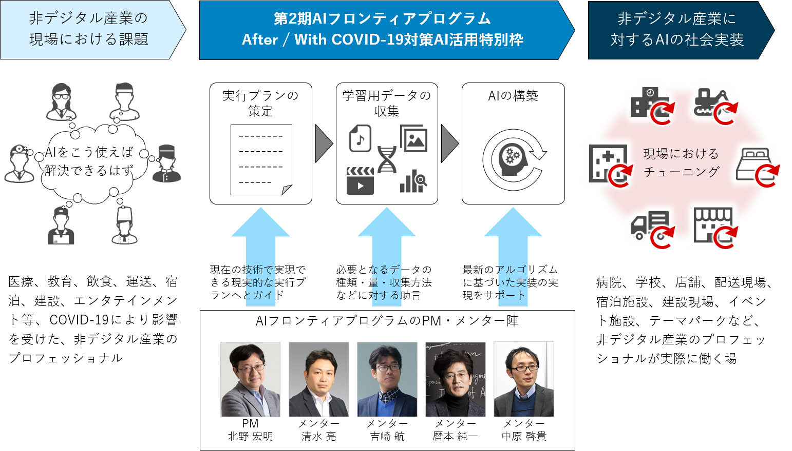

第2期AIフロンティアプログラム
(After/With COVID-19対策AI活用特別枠)
目次 見出しをクリックすると詳細へ移動します
公募概要
概要
「Connected Industries」や「Society5.0」の実現に大きく貢献するAIなどでは、大量のデータ処理や、十分な計算機資源が必要です。他方で、これまで計算機能力向上のドライバーであったムーアの法則の終焉が叫ばれ、既存技術の延長、改良による計算機能力の向上が限界を迎えつつある中、こうした課題を解決するためのハード・ソフト両面での新たな技術が求められています。
このような背景から、国立研究開発法人 新エネルギー・産業技術総合開発機構 (以下「NEDO」という) では、2018年度より「革新的AIエッジコンピューティング技術」及び「次世代コンピューティング技術」に関する研究開発事業を推進しています。
上記研究開発事業の一環として、KDDI株式会社及び一般社団法人未踏は、NEDOより委託を受け、AIチップ・次世代コンピューティング分野における優れた能力を有する人材を発掘し、既存の延長線上にない発想や新規アルゴリズムの考案、AI技術や新原理のコンピューティング技術等を活用した新しいアプリケーションを創出できるような人材を育成するためのプログラム「AIフロンティアプログラム」(以下「本プログラム」という)を企画、実行しております。
本プログラムは、AI技術を駆使してイノベーションを創出することのできる独創的なアイデアや技術を有し、これらを活用する優れた能力を持つ人材を、公募を通じて発掘したうえで、AI分野における実践的能力を高度化するために必要な資源の提供、伴走型による研究開発サポートや技術・経営等に関するアドバイスの提供等の支援を行い、突出した人材を育成するものです。
このたび、すでに募集済の本プログラムの第2期育成対象者に加えて、新型コロナウイルス感染症 (COVID-19)の流行に伴ってもたらされた社会変化の重要性・緊急性に鑑み、AIを活用することで「COVID-19による社会変化によって発生する課題」を解決できる人材を育成するための特別枠として、追加募集を行います。
この「After/With COVID-19対策AI活用特別枠」(以下「特別枠」という) は、本プログラムの要件を満たしたうえで、特に「COVID-19による社会変化によって発生する医療、教育、産業などにおける課題」をAIの活用によって解決することを目指す人材に限定して公募、育成を行うものです。
なお、特別枠の募集対象は、医療、教育、飲食など、COVID-19の流行によって大きな課題が発生した職業に従事しており、その課題についての深い知見を有したプロフェッショナル人材 (例えば医師、教員、介護士などの専門職、飲食、物流、建設、交通といった非デジタル産業の従事者など) を想定しております。
なぜ非デジタル産業のプロフェッショナルを支援するのか？
AIを作るためには「課題解決に結びつく学習用データ」と、それを社会実装し、AIをチューニングするための「フィールド・オペレーション」が重要となります。そのため、各産業分野における課題を知っているプロフェッショナルのみなさんが、「自らデータを収集」し、できあがったAIを「自分のフィールドで運用」することができれば、After/With COVID-19の時代に役立つAIを作ることができると考えます。
本特別枠では、みなさんがAIを活用するために必要な「AIに関する技術力」を、メンターが教育・バックアップすることで、産業×AIのスペシャリストを育成します。

プロジェクトマネージャ及びメンター
本プログラムにおいて、人材の発掘・育成全般を統括するプロジェクトマネージャ、及び育成対象者に対する助言やサポートを手がけるメンターとして、以下の方々にご協力をいただいております。プロジェクトマネージャ及びメンターの詳細情報については別紙をご覧ください。
プロジェクトマネージャ
北野 宏明 (株式会社ソニーコンピュータサイエンス研究所 代表取締役社長 / 所長)
専門分野
システムバイオロジー、人工知能、ロボット、デザイン、エネルギー
メッセージ
本質的に重要な問題をどのように解決するのか、どのような枠組みを作れば解決へと加速することができるのかがいつも頭の中にあります。
そこで、人工知能やロボットの研究をさらに加速させるためには、グランドチャレンジが必要だと考え、「2050年までに、FIFA World Cupのチャンピオンチームに勝利する完全自律型ヒューマノイドロボットのチームを開発する」ことを目標としたロボカップを立ち上げました。さらに現在は、「2050年までにノーベル賞級の科学的発見を行うAIシステムを開発する」ことを目標にしたチャレンジにも取り組んでいます。
AIの進化に伴い、私たちの社会、生活、文明は大きく変わりつつあります。このフロンティアの分野で、AIによる新しい可能性を見出し、ともに挑戦していく人たちに出会えることを楽しみにしています。
メンター
清水 亮 (ギリア株式会社 代表取締役社長)
専門分野
深層学習、コミュニケーションアーキテクチャ
メッセージ
AIは、コンピュータが本来目指していたものであり、現代のコンピュータのまさしく延長線上にあるものです。ところがAIの効果的な使い方をまだ誰も知りません。AIの効果的な応用については現在のところ、まったくの手探りに近い状態で、これはまさしくフロンティア分野であると言えます。
未踏の地のさらにその先として、AIフロンティアへチャレンジしたいという若者たちと一緒に頭を悩ませる日々に思い馳せワクワクしているところです。
私はメンターというよりはみなさんと同じ目線で物事を考え、できるだけみなさんの能力や興味を引き出す指導方法を心がけたいと考えています。最先端のAIが指し示す可能性に胸をときめかせている人、技術が好きで夜も眠れないほど興奮してしまう人、世界を自分の手で変えてみたいと強く願っている人のご応募をお待ちしております。
メンター
吉崎 航 (アスラテック株式会社 取締役 / チーフロボットクリエイター / V-Sido開発者)
専門分野
ロボット、制御ソフトウェア
メッセージ
AIでロボットを動かしてみたい方、募集します。
私がはじめてAIを使ってロボットを動かしたいと思ったのは中学生のころでした。当時、Cで個人が作れるレベルの対話ソフトやGA、ニューラルネットワークをいくつか試した結果、先に駆動部周りのソフトウェアを開発する必要がある考え、V-Sidoを作りました。
私はAIの道からはそれてしまいましたが、AIを取り巻く状況が大きく変わった今、できることはかなり増えていると感じています。アイディア段階では、実現可能性は重要視しません。手法も流行りのものである必要はありません。AIに関する何らかの技術をお持ちで、それをロボットで活用したい夢をお持ちの方を募集します。
メンター
暦本 純一 (東京大学大学院 情報学環 教授 / 株式会社ソニーコンピュータサイエンス研究所 副所長)
専門分野
ヒューマンコンピュータインタラクション、ヒューマンオーグメンテーション
メッセージ
天使のように大胆に、悪魔のように最新に。あなたが思いついたどんな突飛な発想でも、思いつきで終わることなくそれを現実に着地させることでイノベーションにつながります。大胆な発想ができ、そして、それをどう具現化していくかの、緻密で、ときには地味な努力を厭わない応募者を期待しています。ぜひ妄想を現実化してください。
メンター
中原 啓貴 (東京工業大学 工学院 准教授)
専門分野
計算機アーキテクチャ、VLSI 設計技術、リコンフィギャラブルシステム
メッセージ
AI、特に深層学習はこれまでの機械学習では実現できなかった複雑なタスクを実現できつつある一方、大量のパラメータと計算量を必要とするため、既存の計算機ではスピードや消費電力といった問題をいまだに抱えており、即急な解決が望まれています。
私は自分自身で計算機を一から作ること、そして可能な限り速くすることに興味があり、常に自ら手を動かし、時には鉛筆と紙で理論を考えながら、あらゆる方法で最高の計算機を求めて研究をしております。AIの高速化はやりがいのあるテーマであり、私と一緒にこの難題にチャレンジしてみたい人のご応募をお待ちしております。
公募要領
公募の詳細については、以下の公募要領をご覧ください。
応募要件
本プログラムの特別枠における育成対象者として応募するには、以下の要件をすべて満たしている必要があります。
対象者要件 (一部抜粋)
- 個人またはチームによる応募であること (法人格のある組織による応募は対象としません)
- 2020年4月1日時点で18～40歳であること
- プロジェクトマネージャの所属する企業 (及びその子会社)、研究組織に属していないこと
- 今回の提案テーマと重複する内容で、公的機関等からの助成等を受けたことがない、かつ現在も受けていないこと
- 育成対象期間を通じて、原則として日本国内に在住していること
- 本プログラムへの参加や提案するテーマの研究開発を通じて、日本のIT関連産業の発展に寄与する意欲があること
- 暴力団、暴力団員、及びこれらに類する組織や個人に該当しないこと。また、これらの組織や個人と社会的に非難されるべき関係を有していないこと
- COVID-19による社会変化によって課題が発生している非デジタル産業において、すでに一定のプロフェッショナルキャリアを有しており、そのキャリアを証明可能であること。もしくはそのようなキャリアを有する者をチームリーダーとする3人以内のチームで、チームに1人以上エンジニアがいること。
募集テーマ分野
優れた能力を有する人材を発掘し、既存の延長線上にない発想や新規のアルゴリズム考案、AI 技術 (ハード・ソフト) を活用した新しいアプリケーションを創出できるような人材の育成を目指し、AI の展開先・活用先が「COVID-19 による社会変化によって発生する課題」の解決に寄与するテーマを募集いたします。
例えば、以下のような「非デジタル産業×AI」に関する研究開発テーマを想定しておりますが、対象とする産業や解決すべき課題はこれらに限りません。
- 「医療×AI」AIによる読影などを用いた遠隔診断によって、病院の稼働を低減できるもの
- 「教育×AI」新学期の開始が遅れた教育現場において、AIを用いた進捗管理などの教育手法により、学業の遅延をカバーできるもの
- 「建設×AI」自動化技術、ロボット制御などを用いて、建設現場などで人手のかかる作業を3密など感染の危険性を避けながら実現可能なもの
支援内容及び支援期間
募集人数
- 数名程度
研究開発資源の提供
研究開発の状況やそこで生じた課題等に関するレポートを毎月提出していただくことを条件として、育成事業進捗会議で認められた金額相当 (育成対象者1人につき最大300万円相当。3人のチームによる研究開発の場合はチームとして最大900万円相当)の研究開発に係る資源を 提供します。
その他支援など
- メンターによる技術・経営等に関するアドバイスの提供
- 未踏社団による特任研究員としての身分の付与
- その他、プロジェクトマネージャ、メンターが研究開発に必要と認めた各種サポートの提供
- 育成期間終了後に、特に優れた能力を有し、リーダーシップと突破力を兼ね備えていると認められた育成対象者には、AIフロンティアパスファインダーとして表彰されます。
支援期間
- 育成対象者の研究開発に必要な最小限の期間。ただし、最大で採択決定日から 2021年2月19日(金) までを予定しております。
応募方法
育成対象者の募集は終了いたしました。多数のご応募ありがとうございました。
育成対象者
第2期AIフロンティアプログラム特別枠では、2020年5月27日 (水)から2020年6月11日 (木) までの期間で育成対象者の公募を行いました。
その後、メンターによる一次審査 (書類審査) 及び二次審査 (面談審査) を実施して候補者の絞り込みを行ったうえで、メンター、プロジェクトマネージャ、経済産業省、NEDO等からなる育成事業進捗会議における議論を経て、最終的に以下の3名を育成対象者として決定いたしました。
育成対象者は、2021年1月29日 (金)までの期間に、メンターの指導のもと、それぞれのテーマに沿って研究開発をを行いました。研究開発の成果については、成果発表会を2021年2月19日 (金) にオンラインにて開催しました。
育成対象者一覧
- 対象者氏名・所属
- 柴崎 加奈子（ストリートダンス講師）
土田 修平（神戸大学大学院工学研究科 特命助教）
清水 大地（東京大学大学院教育学研究科 特任助教） - 担当メンター
- 吉崎 航 (アスラテック株式会社 取締役 / チーフロボットクリエイター / V-Sido開発者)
- 副担当メンター
- 暦本 純一 (東京大学大学院 情報学環 教授 / 株式会社ソニーコンピュータサイエンス研究所 副所長)
- 研究テーマ
- ダンスレッスンの可能性を拡張する講師ー生徒サポートAIシステムの開発
成果発表会
第2期AIフロンティアプログラムの成果発表会を、2021年2月19日 (金)にオンラインにて開催しました。
成果発表会には、第2期AIフロンティアプログラムの育成対象者5組7名が登壇し、AIに関する各自の研究開発についてプレゼンテーションを行なったほか、チームラボ代表である猪子寿之氏、筑波大学 デジタルネイチャー開発研究センター長の落合陽一氏によるAIや先端テクノロジーをテーマにした講演が行われました。
問い合わせ先
本プログラムに関する質問や問い合わせについては、以下の事務局までE-mailでご連絡ください。
一般社団法人未踏 AIフロンティアプログラム運営事務局 (担当：峰本、吉住)
E-mail：ai-frontier@mitou.org
※問い合わせの際は、メールの件名 (題名) を必ず「AIフロンティアプログラム問い合わせ」とし、本文に、「氏名 (ふりがな)」「所属組織名 (部署名)」「電話番号」「E-mailアドレス」を明記してください。